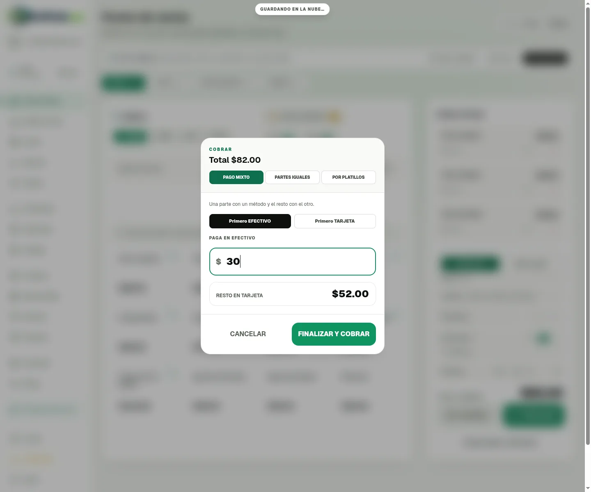
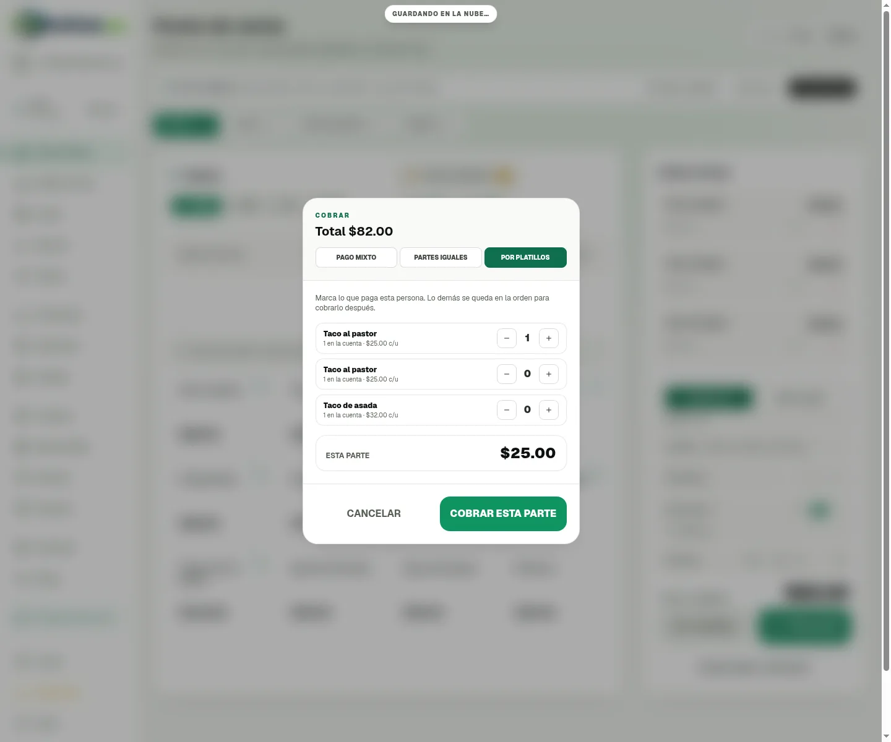
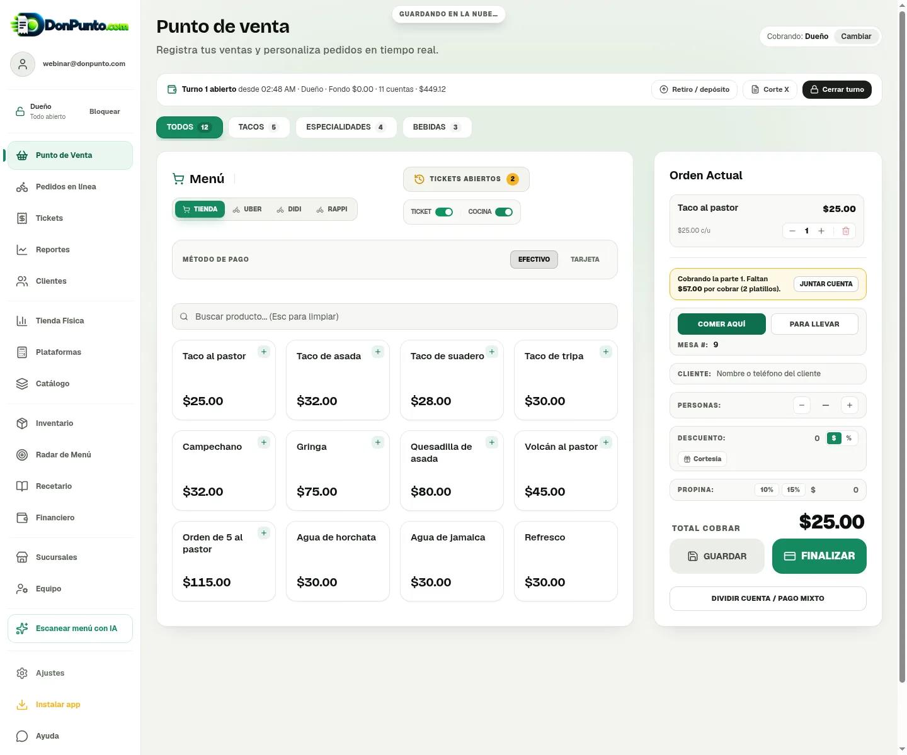
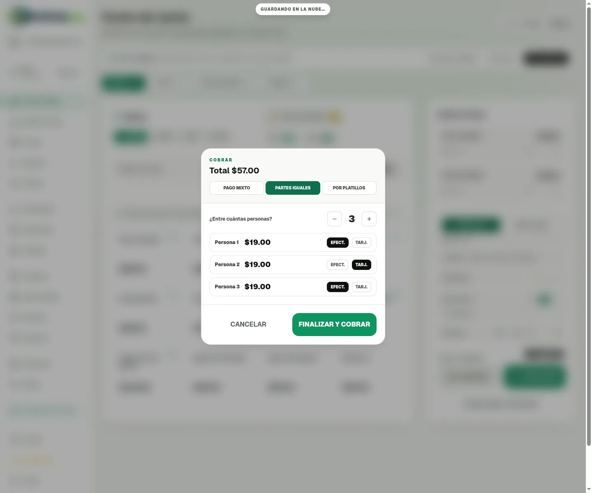

Dividir cuenta y pago mixto (revisión)
Botón nuevo DIVIDIR CUENTA / PAGO MIXTO debajo de FINALIZAR (solo en Tienda). Probado con la cuenta de demostración: cuenta de $82 en la mesa 9.
1. Pago mixto: $30 en efectivo y el resto con tarjeta
El corte suma $30 en Efectivo y $52 en Tarjeta. El ticket imprime «Pago mixto: Efectivo $30.00 / Tarjeta $52.00».

2. Por platillos: cada quien paga lo suyo
Se marca lo que paga esta persona (1 taco al pastor, $25).

Esa parte se cobra sola, como su propia venta. Lo demás se queda en la orden con la misma mesa ($57 por cobrar). Con «JUNTAR CUENTA» se regresa todo junto.

3. Partes iguales: entre 3, cada quien elige efectivo o tarjeta
$57 entre 3 = $19 c/u. El ticket imprime «Dividida entre 3: $19.00 c/u». El corte suma Efectivo $38 y Tarjeta $19.
